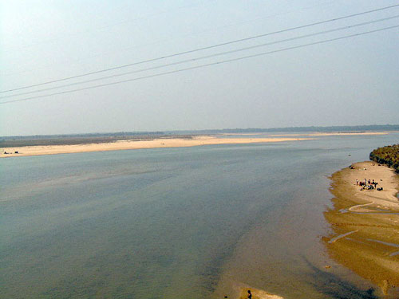
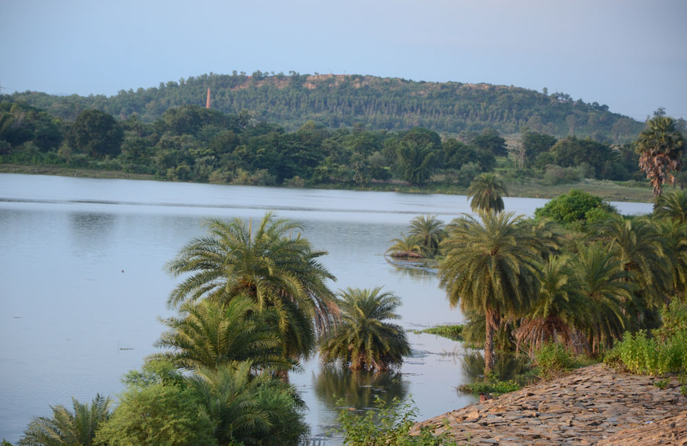

10.Subarnarekha River
The Subarnarekha River (also called the Swarnarekha River) flows through the Indian states of Jharkhand, West Bengal and Odisha. As per tradition, gold was mined near the origin of the river at a village named Piska near Ranchi. This is why it was named Subarnarekha, meaning "streak of gold". Legend has it that traces of gold were found in the river bed. Even now, people look for traces of gold particles in its sandy beds. The name is a combination of two words meaning gold and line/ streak in Indian languages.
After originating near piska/nagri, near Ranchi, the capital of Jharkhand,the Subarnarekha traverses a long distance through Ranchi[10]Seraikela Kharsawanand East Singhbhum districts in the state. Thereafter, it flows for shorter distances through Paschim Medinipur district in West Bengal for 83 kilometres (52 mi) and Balasore district of Odisha. There, it flows for 79 kilometres (49 mi) and joins the Bay of Bengal near Talsari. The total length of the river is 395 kilometres (245 mi).

The prominent tributaries of the Subarnarekha are Kharkai, Roro, Kanchi, Harmu Nadi, Damra, Karru, Chinguru, Karakari, Gurma, Garra, Singaduba, Kodia, Dulunga and Khaijori.[9] The Kharkai meets the Subarnarekha at Sonari (Domuhani), a neighborhood of Jamshedpur. Hundru Falls is created on the course of the Subarnarekha, where it falls from a height of 98 metres (322 ft). The spectacular sight of water falling from such a great height is a sight to behold. The different rock formations due to erosion by the constantly falling water have added to the beauty of the place.

The Subarnarekha multipurpose project envisaged the construction of two dams, one at Chandil across
the Subarnarekha and the other across the Kharkai at Icha near Chaibasa, two barrages at Galudih
across the Subarnarekha and the other across the Kharkai at Ganjia near Adityapur and a network of
canals from these. Three small storage reservoirs and a network of canals from these reservoirs are
in Orissa. Started in 1982–83, the multipurpose project was planned for irrigation, hydropower
generation and water supply. While the Chandil dam and Galudih barrage are almost complete, the
other components are still incomplete. The project was taken up for construction in the year
1995–96.